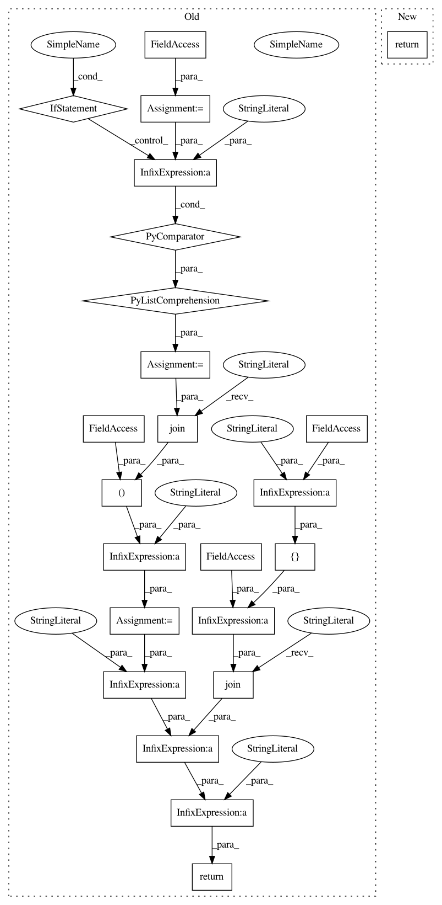

08e57f495ebbfa254783777bae75590af8165f53,reframe/core/containers.py,Singularity,launch_command,#Singularity#,177
Before Change
def launch_command(self):
super().launch_command()
run_opts = ["-B"%s:%s"" % mp for mp in self.mount_points]
if self.with_cuda:
run_opts.append("--nv")
run_opts += self.options
run_cmd = "singularity exec %s %s bash -c " % (" ".join(run_opts),
self.image)
return run_cmd + """ + " ".join(
["cd " + self.workdir] + self.commands) + """
class ContainerPlatformField(fields.TypedField):
def __init__(self, *other_types):
After Change
run_opts += self.options
workdir_cmd = f"--workdir="{self.workdir}" " if self.workdir else ""
if self.command:
return (f"singularity exec {workdir_cmd}{" ".join(run_opts)} "
f"{self.image} {self.command}")
return (f"singularity run {workdir_cmd}{" ".join(run_opts)} "
f"{self.image}")
In pattern: SUPERPATTERN
Frequency: 3
Non-data size: 23
Instances
Project Name: eth-cscs/reframe
Commit Name: 08e57f495ebbfa254783777bae75590af8165f53
Time: 2021-02-15
Author: manitaras@cscs.ch
File Name: reframe/core/containers.py
Class Name: Singularity
Method Name: launch_command
Project Name: eth-cscs/reframe
Commit Name: 08e57f495ebbfa254783777bae75590af8165f53
Time: 2021-02-15
Author: manitaras@cscs.ch
File Name: reframe/core/containers.py
Class Name: Sarus
Method Name: launch_command
Project Name: eth-cscs/reframe
Commit Name: 08e57f495ebbfa254783777bae75590af8165f53
Time: 2021-02-15
Author: manitaras@cscs.ch
File Name: reframe/core/containers.py
Class Name: Docker
Method Name: launch_command